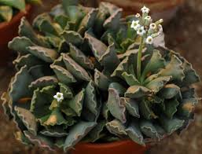
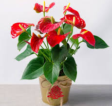

Все про квіти, вазони, рослини
Найкращим і найдоступнішим засобом для пізнання барв та кольорів нашого життя є квіти. Щодня, відволікаючись від міської суєти та проблем, ми маємо надзвичайну можливість зануритися в казкову планету – планету квітів. Живі квіти, що приносять нам стільки позитивних емоцій і настрою, є невід'ємною частиною життя творчої людини.
Якщо ви серйозно вирішили облаштувати свою квартиру кімнатними квітами - вазонами і зробити з неї справжню планету квітів, то вам треба пам'ятати, що кожна частина вашого житла повинна бути прикрашена по-своєму, і вимоги до інтер'єру і розташування квітів будуть різнитись.
Догляд за рослинами – окрема і досить складна тема. Вам потрібно стати справжнім експертом, якщо ви хочете створити в домі оранжерею. Одні рослини потребують частого поливу і високої вологості кімнатного повітря, інші - навпаки - від зайвої вологи чахнуть та гинуть. Деякі квіти мають потребу у великій кількості світла, інші ж люблять тінь. Сонячне тепло буде обов'язковою умовою для догляду за певним видом рослин, але деякі квіти можуть загинути, якщо надати їм надмірного тепла... Надіємось з наших статтей ви дізнаєтесь про всі ці особливості та без зайвих проблем гарно облаштуєте свою оселю квітами та вазонами.
Починати догляд за квітами потрібно з їх купівлі. Після придбання, ваша рослина повинна пройти спеціальний період звикання до умов вашої квартири. У цей час квіти потрібно помістити в помірковано тепле місце, захистити від надмірних прямих сонячних променів і протягів, і не поливати їх занадто рясно. Після періоду акліматизації (протягом якого можуть відбутися різноманітні неприємні випадки начебто втрати рослиною одного-двох листочків), кімнатні квіти можна переставити на заплановане місце. Але догляд за квітами на цьому, звичайно ж, не кінчається. Однак, якщо ви всерйоз вирішили зробити зі своєї квартири оранжерею, те прекрасно це розумієте. Процес догляду за квітами довгий і постійний.
Щоб зробити покупку найбільш підготовлено і грамотно, рекомендуємо вам скористатися каталогом рослин. Тут грамотно зібрані всі види квітів і їхні придатні сполучення, вам залишиться лише вибрати потрібні. Крім того, каталоги квітів знадобляться вам не тільки для покупки, але й для рішення питання, що дарувати коханій людині. Адже кожна рослина і усяке сполучення рослин у букеті квітів має свій особливий смисл і значення, і якщо ви хочете виразити всі відтінки своїх почуттів, то наш каталог допоможе Вам у цьому. У каталозі також зібрані різноманітні фото квітів з їхнім описами, значенням і рекомендованими заходами по догляду. Як правило, фотографії квітів виконані у високій якості, тому ви зможете з максимальною точністю вибрати потрібний вам букет.
Також в нас Ви зможете почитати цікаві статті на різноманітні тематики про квіти, тут будуть зібрані поради про складання букетів на весілля, дні народження, ювілеї та інші свята. З наших статтей Ви зможете дізнатись про багато цікавого та корисного по організації альпінаріїв бордюрів і т.д. Окремо буде розглянуто питання декорування квітами.

Адроміскус
Це рослина-сукулент, що відноситься до родини товстолистих. Батьківщиною цієї красивої рослини є пустельні райони Південно-Західної та Південної Африки. Багаторічні чагарники або трав'янисті утворення мають соковиті, найчастіше темно-зелені листки овальної форми. На стеблах при недостатньому поливі можуть утворюватися повітряні корінці у вигляді червонявих волосків біля основи, що полегшують розмноження рослини.
Цвітуть кущі адроміскусу рідко, але красиво - у деяких з 50 різновидів стрілоподібні суцвіття можуть досягати довжини до 40 см, помітно виділяючись на фоні листків. Щоб отримати цвітіння, потрібно підтримувати оптимальний температурний режим і забезпечити інші умови догляду.

Антуріум
Дуже гарна вічнозелена епіфітна або напівепіфітна рослина з повітряним корінням родини ароїдних. Антуріум, або квітка фламінго, як його ще називають, можна зустріти в тропічних лісах Південної Америки. Назва сформувалася від двох латинських слів: « anthos» - квітка і «oura» -хвіст, що в перекладі означає квіткохвіст. Вишукані і оригінальні за формою та забарвленням суцвіття надають екзотичний вигляд рослині. Вони являють собою качан, оточений покривалом різного забарвлення. Суцвіття тримаються кілька тижнів, а період цвітіння цілий рік. Листки великі, серцеподібні або подовжені, широколанцетні, темно-зелені, шкірясті. На стеблах розташоване повітряне коріння.
Кімнатні рослини
Кімнатні квіти, немає жодної дівчини, жінки, яка не любила б квіти! В цьому розділі нашого порталу ми допоможемо Вам полегшити завдання по купівлі та догляду за квітами. Адже квіти – це не тільки прикраса будинку, кімнати або балкона, а ще й спосіб розслабиться після важкого робочого дня. Адже всі знають, що зелений колір діє заспокійливо на нервову систему, а це позитивно впливає на настрій і працездатність. Життя в гармонії із природою дозволить Вам відкрити в собі сховані таланти, нові та невідомі Вам риси свого характеру. Догляд за ними це завжди приємно. І ми хочемо, максимально полегшити Вам це завдання!
Квіти з давніх часів супроводжують і прикрашають життя та побут людини. Доглядаючи за кімнатними квітами, ми відпочиваємо, отримуємо задоволення від роботи і просто задоволення і насолоду.
Буквально на наших очах із квіткового насіння з'являється спочатку паросток, а потім він перетворюється в дорослу, сильну, гарну рослину. І головне - воно живе, чує та відчуває нас, реагує на наш настрій і навіть самопочуття.
Будь-яку нудну та сумну кімнату можна змінити до невпізнанності з допомогою кімнатних рослин - кучерявими, ампельними, декоративними, квітучими... Декорування інтер'єру живими квітами зараз популярно як ніколи.
Вивчивши особливості кожної кімнатної квітки та правильно підібравши кімнатні рослини для своєї квартири, ви можете забезпечити собі цілий рік розкішний квітучий сад, не виходячи з дому!
Наприклад, азалія буде цвісти із січня по квітень; антуріум - радувати око з лютого по травень; пеларгонія крупноквіткова - вражати своєю красою з березня по червень; клен кімнатний - дарувати аромат своїх квітів із квітня по серпень; жасмин - із травня по вересень; колумнея дрібнолиста - із червня по вересень; розан китайський - із червня по жовтень; троянди поліантові - з липня по листопад; крінум - із серпня по жовтень; бегонія шляхетна - з вересня по грудень; бувардія гладкоцвітна - з жовтня по грудень.
І це мізерно мала частина представлених на сьогоднішній день кімнатних рослин. Простір для вашої творчості та фантазії – безмежний. У ваших силах зробити своє життя і життя вашої сім'ї більш красивим та гармонійним з допомогою кімнатних квітів!